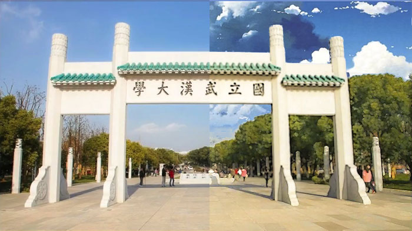

云顶作坊PS公开课场景篇
一.简介 场景
1.视觉合成 创意合成 视觉运营
2.摄影后期 标准后期 人像精修 商品精修
3.排版布局 印刷样机 UI视觉
4.图像绘制 数码绘图 拟物绘图 矢量绘图
5.奇妙操作 创意GIF 3D建模
二.标准后期
1.帕累托定律
2.调光 亮度对比度 曝光度 色阶 曲线全能
a.调整图层 亮度对比度 10 10 灰度仍然很高 这样可以把调节的步骤记录下来 不损失画质
b.选择 色彩范围 高光 中间调 阴影 可以看到各个色部 白色区域
c.色阶 两边向中间调 使暗的更暗 亮的更亮 整体对比度提高 颜色更鲜艳 去灰
d.曲线 S型微调 对比质感更强,加强亮部 减小暗部
3.调色
a.赛博朋克 camera raw 先把高光变成蓝色粉色 阴影变成另一颜色
b.色温 阴冷一些 -16 色调色相 暖一些 43
c.光线 高光暗一些-13 不会过曝 阴影更亮一些 35 更多细节
d.偏暗 白色 调亮 8 对比度调大13
e.清晰度 高更清楚 颗粒感 低 模糊光晕效果 -15
f.细节 锐化 14
g.分离色调 高光 色相 312 粉色 阴影色相 蓝色 231 饱和度都为10
h.函数 光晕 四周发黑 数量-8 羽化100
i.拖入开始的工程
j.色阶调整图层 可以调节RGB通道 红蓝对比更大一些
h.曲线调整图层 S形 提高对比度质感
i.新建图层 选择 色彩范围 选中高光区域 容差67 选择粉嫩的前景色 Option + Del 填充
j.右键 混合选项 外发光 混合模式 颜色粉嫩 扩展0 大小4 线性减淡添加 不透明度47 让光线更明显一些
k.添加云彩 因为过曝了 不透明度57 加一层雾蒙蒙的 完成.
4.风格化 滤镜库 插件 Camera Raw Knoll Light
5.HDR锐化 细节更多 阴影调亮 高光调暗
6.星海城效果
a.CameraRaw加载 调光调色
b.选中一半 添加蒙版 没选中的区域就被透明化了 黑色的蒙版是透明化 白色的是显示
c.复制加载的图,滤镜库 艺术效果 海报边缘 凸显细节 边缘厚度2 边缘强度0 海报化6
d.再复制 绘画涂抹 画笔3 锐化2
e.天空 选择 色彩范围 新建图层 填充蓝色
f.载入星海城天空 ALT+点击只对下面的图层生效 天空
g.两个滤镜图层调换位置 删掉用来选区天空的复制图层
h.涂抹图层添加蒙版 黑色前景涂抹露出牌坊海报细节
i.给树木添加统一的颜色 涂抹树木区域 吸取背景里的浅绿 CTRL点击图层 选中涂抹的区域 填充吸取的淡绿色 混合模式 柔光 不透明度 69 完成 右侧为星海城效果

三.人像精修
1.轮廓/杂质/肤色
轮廓:液化 CTRL+SHIFT+X
肤色:三种皮肤 色相差不多
2.磨皮/层次/补妆
磨皮:美图app原理 克隆原理 高斯模糊
层次:面部结构 高光
3.眼睛精修/质感
质感:高反差保留
4.人像的基准处理
a.高斯模糊 磨皮
b.图层柔光 补妆/补色
5.人像的商业级精修
a.双曲线 (或中度灰)
b.调节光影
c.高低频(高反差保留)
d.顺滑画质
e.细节类手绘处理
6.案例
a.轮廓 液化 向上拉一下下巴
b.污点修复
c.复制轮廓组 合并图层 再复制一层
d.高斯模糊磨皮 会损伤纹理
e.再复制两层 上面的层其它 高反差保留 半径0.8 混合模式,线性光,隐约能看到皮肤的边缘 质感提升起来了
g.建组 全部放在一个组里 第一层次
未完待续